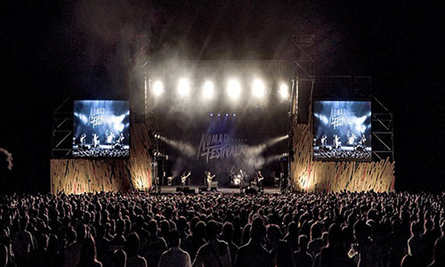

草東沒有派對
No Party For Cao Dong


簡介
草東沒有派對是一隻臺灣本土的搖滾樂團，成軍於2012年，由主唱兼吉他手巫堵、吉他手筑筑、貝斯手世暄及鼓手凡凡組成．2016年3月發行第一張專輯《醜奴兒》獲初步注目及各獎項肯定，包括第28屆金曲獎最佳樂團等多項大獎．2017年暫時休團，18年開始世界巡迴．

源起
最早開始時的團名為「草東街派對」，由幾位玩團又喜歡去草東街及山上晃的年輕人組成。團名來源「草東街」是位於臺北陽明山的街道名。其後，經歷一些成長過程中必經的難題和人事更動後，留下的團員決定以「草東沒有派對」這個團名繼續音樂旅程，而這亦是整個樂團風格發展的轉捩點。
發展
2015年9月開始，草東的小型演出一票難求；其後單曲《爛泥》於當時衝破18萬人次點閱率；《醜奴兒》專輯初刷兩千張供不應求，在臺灣的獨立樂團中，為令人不可忽視的黑馬，各專業樂評紛紛撰文探討草東的崛起。
2019年初，為赤燭遊戲開發之遊戲《還願》演唱同名主題曲《還願》。
作品
醜
以輕鬆、寫意的曲風，戲謔的唱腔來諷刺愛情及自身的醜陋。
我們
用憤慨的語言控訴著社會，聲嘶力竭的做出血淋淋的吶喊。